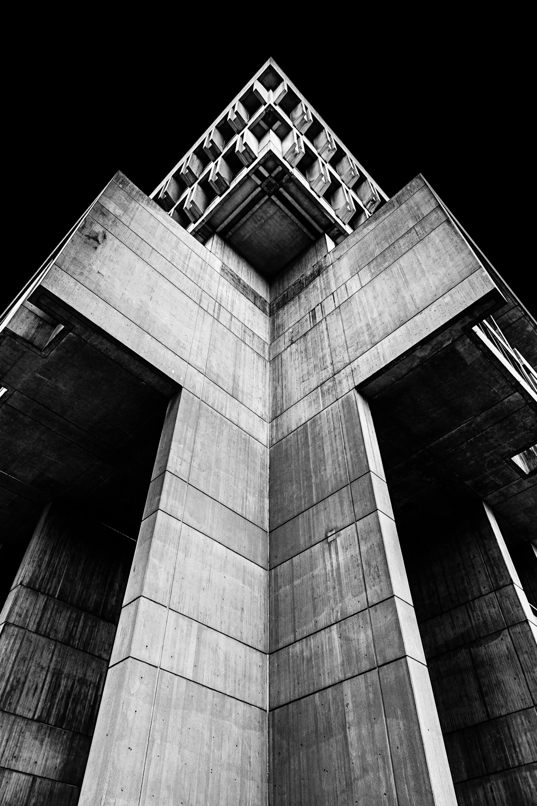

Strategy
Digital strategy · Product definition · Information architecture
ZEC / 01
Websites, products and systems shaped around the way your business works.
Start a project01 A clear purpose
ZEC brings strategy, design and development into one connected process — so the product starts with the right problem and stays clear from idea to launch.
02 Disciplines
Websites, products and internal tools, planned around the people who use them and the work they need to do.
03 Start with the need
The right format follows what needs to change — from a clearer offer to a more connected operation.
Help people understand what you do and what to do next.
Bring repeat work and slow handoffs into a tool built around the process.
Make it easier to discover, compare and buy your products.
Bring people, tools and services into one coherent system.
04 Method
A connected process keeps the work useful from the first question to launch.
Understand the business.
Set the product and its priorities.
Create the experience.
Develop the product.
Refine the experience.
Deliver and move forward.
05 What we believe
A digital experience should make the important things clear — then make the next action feel natural.
06 Capabilities / Connected practice
Digital strategy · Product definition · Information architecture
UX / UI · Visual systems · Responsive design · Conversion design
Frontend · Web applications · Dashboards · Platforms
E-commerce · SaaS MVPs · Custom systems · Business tools

08 About ZEC
ZEC connects the way a business works with the experiences people use — from the first idea to the final interface and beyond.
09 Questions
A few useful details about working with ZEC.
Websites, landing pages, e-commerce, web applications, dashboards, platforms, SaaS MVPs and custom business systems.
ZEC works with businesses that need a website, a digital product or a custom system. The first conversation helps clarify whether the work is a good fit.
Start with a conversation about what you are trying to solve. We clarify the needs, agree on scope and outline next steps before work begins.
Timing depends on scope, content and review cycles. Once the scope is clear, ZEC will provide a project schedule before starting.
Yes. The work can begin with what is already there: what serves people well, what causes friction and what needs to change.
Yes. ZEC can design and develop web applications, dashboards, platforms and business tools around the workflow they need to support.
Cost depends on the size and requirements of the project. After understanding the scope, ZEC will send a clear proposal before you commit.
Yes. Projects can be run remotely with businesses in different locations.
Maintenance or future improvements can be planned as part of the project or discussed as follow-up work.
ZEC / 10 — Start a project
Tell us what you are building.
We will start with the need.